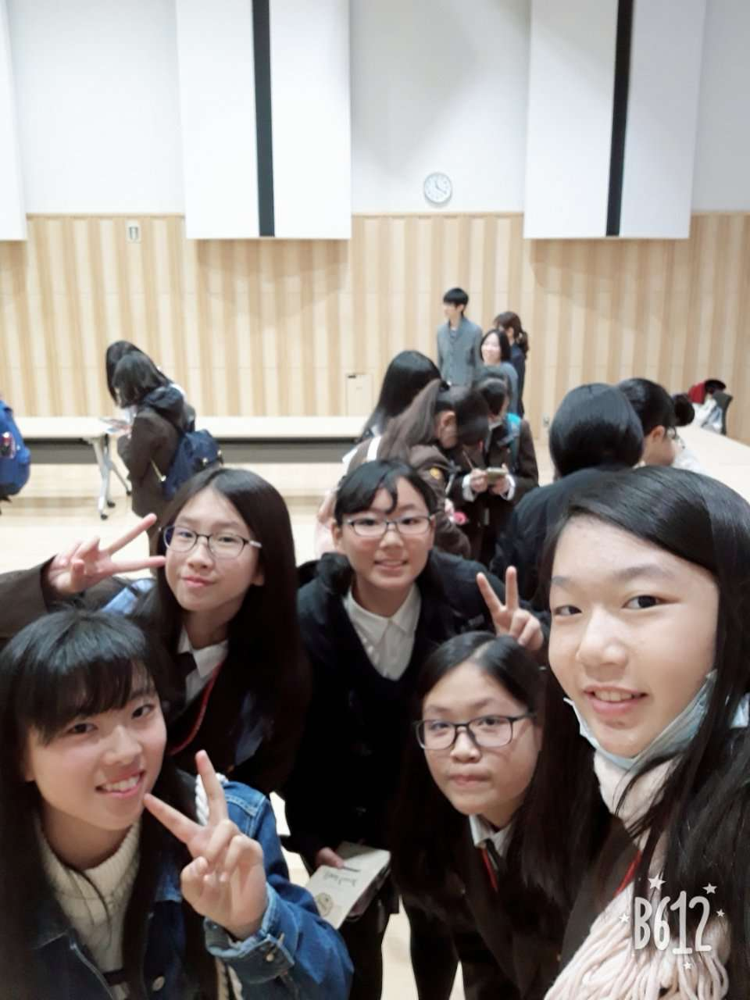
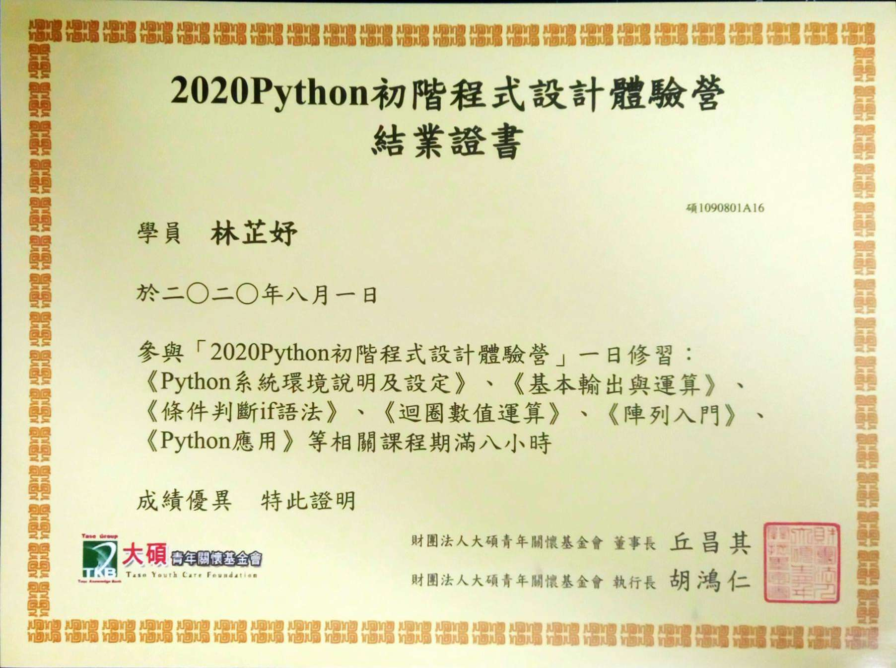
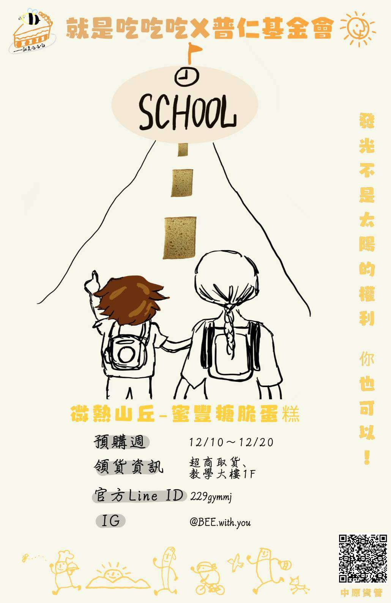
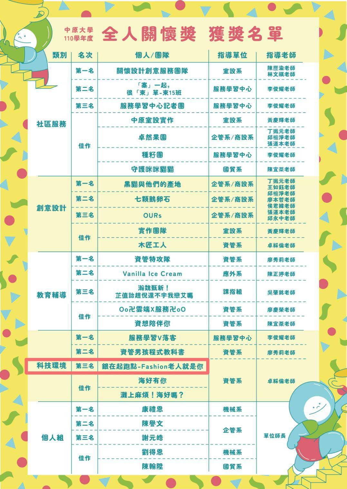
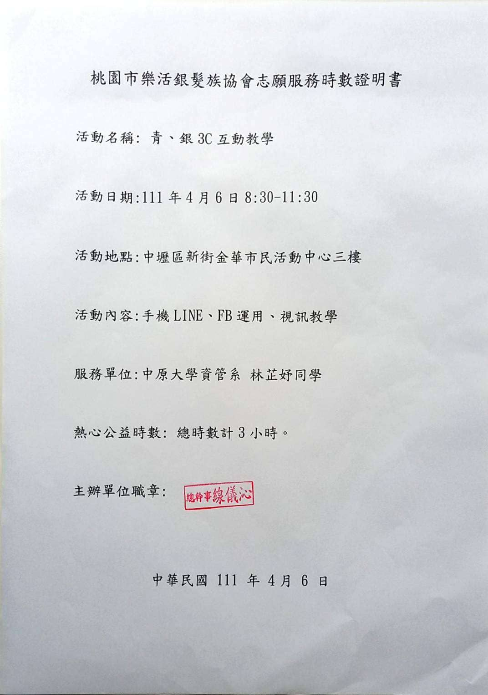
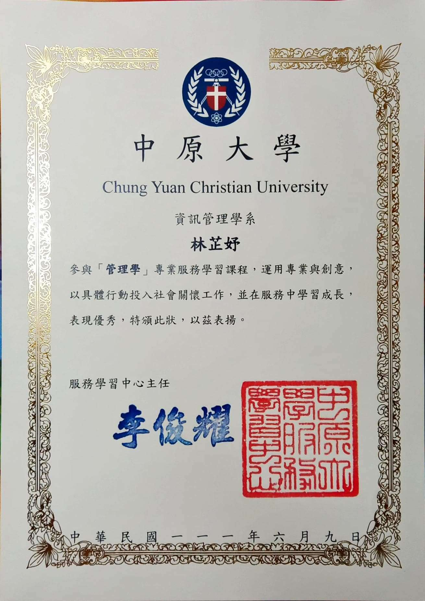

Professional Skill
Experience
高一-日本教育旅行

與同組日本同學合照
高一時，參加學校舉辦的日本教育旅行，到日本當地的高中進行參訪，體驗當地的特色文化，對我來說是特別的回憶。高二暑假-Python初體驗

Python體驗營結業證書
高二暑假時，參加Python程式體驗營，經過那次體驗後發現並不排斥寫程式，後來指考選擇科系時，才把資訊管理學系放在第一順位。大一上-企業概論

團隊宣傳海報
大一上企業概論課團隊和普仁基金會合作，幫他們賣出蜜豐糖脆蛋糕。大一下-全人關懷獎

得獎名單
大一下和管理學組員們，一起報名全人關懷獎科技環境組，團隊名為"銀在起跑點-Fasfion老人就是你"，在我們的努力下得到該組第三名。大一下-志工服務

服務時數證明
因管理學課程需要志工服務，我和小組成員選擇利用我們自身的專長，選擇服務銀髮族，幫助他們熟悉手機基本的操作。大一下-管理學

管理學獎狀
在管理學課程中，我擔任小組中的組長職位，在每週課程時回復課程討論，也盡力履行組長的責任，在期末時意外得到一張獎狀，對我來說是莫大的鼓勵。